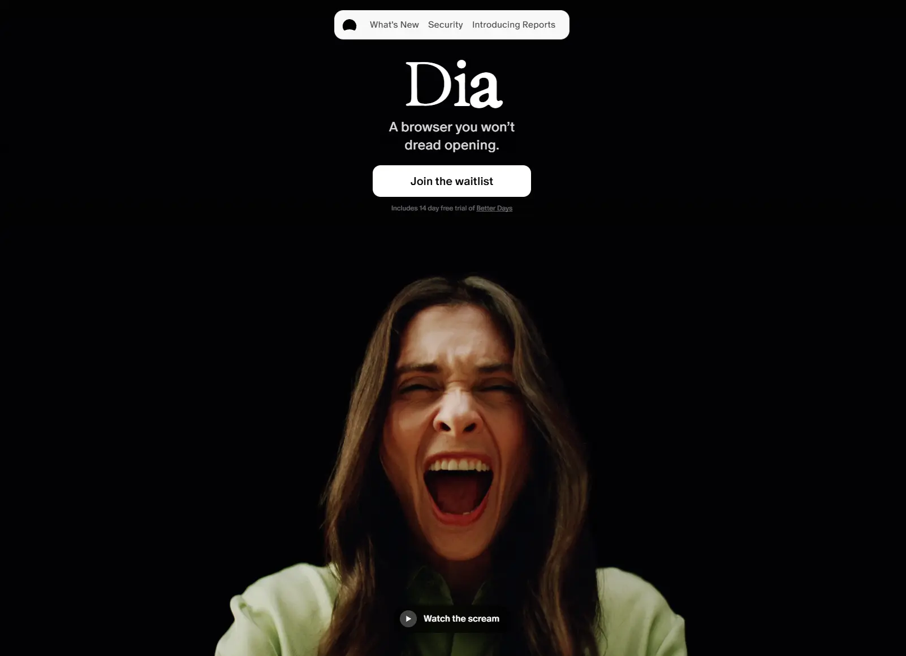

Dia
- Сервисы и приложения
- Продуктивность
- ИИ-сервисы
- Редакционный
- Минимализм
- Строгий B2B
- Сайт жив

Что это
Продуктовый сайт браузера Dia от The Browser Company: утренний брифинг, ответы по контексту открытых вкладок и подключённых инструментов, профили и группы вкладок. Светлая продуктовая подача с видео и мягкими анимациями. Информативный экспрессивный продуктовый сайт браузера.
Чем интересен
- Скриншот 014.webp фиксирует более раннюю тёмную версию сайта эпохи листа ожидания: живой сайт уже светлый и релизный, со слоганом «More than a browser. A better workday.»
- Старый слоган «A browser you won't dread opening» при этом остался в og:title и twitter:title — метаданные разошлись с заголовком страницы.
- Контент полностью на Sanity: в данных страницы лежат реальные документы CMS, а hero-компонент умеет выбирать тип ассета — картинка, видео или Lottie.
- Аналитика Plausible намеренно отдаётся с собственного домена, а не с чужого — обычный приём обхода блокировщиков; других счётчиков в разметке нет.
- Tailwind переопределён почти до неузнаваемости: числовые утилиты соответствуют пикселям, а точки перелома заданы вручную с шагом в сотню пикселей.
- В подвале нет ни юридического лица, ни адреса, а год копирайта подставляется скриптом уже на клиенте — в серверном HTML стоит пустой знак охраны прав.
Паспорт
- Домен
- diabrowser.com
- Тип сайта
- Лендинг
- Категории
- Сервисы и приложения
- Подкатегории
- Продуктивность, ИИ-сервисы
- Для кого
- Продуктовым командам, Разработчикам, Маркетологам
- Стиль
- Редакционный, Минимализм, Строгий B2B
- Язык
- Английский
- Страна
- США, Нью-Йорк
- Автор
- The Browser Company of New York
- Год
- 2026
- Добавлен в коллекцию
- 01.10.2026
Палитра
-
#020204— 88% кадра -
#361E12— 3% кадра -
#66341C— 2% кадра -
#FAFAFA— 2% кадра -
#958C65— 2% кадра
- Режим
- Тёмная
- Цвет фона
- Синий
Технические факты
- HTTPS
- да
- Meta viewport
- да
- Title
- Dia | The browser for better days at work. (42 симв.)
- Description
- Dia is the browser for better days at work. Get answers without having to ask, produce beautiful ready-to-share outputs, and stay focused in the best browser for your work day. (176 симв.)
- Open Graph
- да
- Структурированные данные
- нет
- Sitemap
- https://www.diabrowser.com/sitemap.xml — главная, разделы продукта и порядка сотни страниц changelog и release notes
- Robots
- есть: Allow: /, ссылки на sitemap нет
- Аналитика
- Plausible, скрипт отдаётся с собственного домена
- Проверено ссылок
- 15
- Битые ссылки
- https://diabrowser.com/privacy-policy — 404, хотя адрес указан в sitemap
- Контакты
- почты в подвале главной нет; на внутренних страницах найдены help@diabrowser.com и teams@diabrowser.com; есть страницы статуса, доверия и релизов, соцсети X, LinkedIn, Instagram
- Юридическая информация
- страницы политики конфиденциальности, условий использования и безопасности отвечают 200; юридического лица и адреса в подвале нет, год копирайта подставляет клиентский скрипт
Технологии с доказательствами
- Next.js (Pages Router) — заголовок X-Powered-By: Next.js, чанки /_next/static/chunks/pages/_app-*.js, инлайн-скрипт __NEXT_DATA__, манифесты _buildManifest.js и _ssgManifest.js
- React — корневой div#__next и чанк framework-*.js, серверный рендеринг с инлайновым opacity:0 на анимируемых узлах
- Vercel — заголовки Server: Vercel, X-Vercel-Cache: HIT, идентификатор деплоя в адресах статики
- Tailwind CSS (сильно переопределённый) — 993 вхождения --tw-* в собранном CSS, числовые утилиты равны пикселям (px-24, rounded-30), брейкпоинты заданы вручную от 400 до 2000 px
- Sanity (headless CMS) — картинки с cdn.sanity.io/images/e5fj2khm/production/*, в __NEXT_DATA__ документы Sanity с _type/_rev и тип hero-компонента homePageHeroSunrise
- Mux (видео) — четыре тега video с постерами image.mux.com, в данных объекты _type: mux.video и mux.videoAsset
- Lenis — атрибут data-lenis-prevent на мобильной навигации
- Typeform — формы form.typeform.com на страницах /earlybirds и /windows
- Plausible с собственным прокси — скрипт отдаётся с домена сайта (/js/es.js), endpoint указывает на plausible.io, включены события страниц, глубины скролла и внешних ссылок
- Self-hosted шрифты — preload для ABCOracle-Regular.woff2 и 205TF-Exposure; в CSS 27 файлов шрифтов (205TF Exposure, ABC Oracle, ABC Favorit Mono, Quadrant Text Mono, Ammer Handwriting)
Что смотреть в первую очередь
Смотреть как пример продуктового лендинга с аккуратной типографикой: крупная антиква в заголовках, капсульная шапка с размытием, полноэкранные видео продукта и честный блок про приватность с тумблерами.